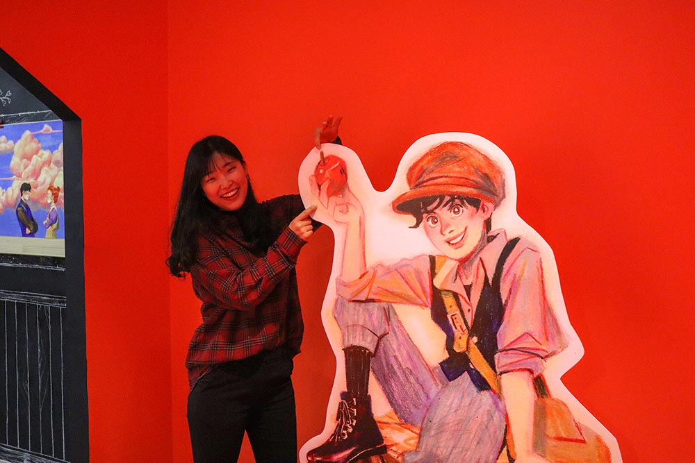

귀염둥이 막내 주제에 키는 제일 큰, 막내이자 머스트해브인 그녀는 신기하게도 희씨 집안의 피를 강하게 물려받았습니다. 그녀는 얌전하다가도 둘째인 희재와 만나면 악동이 되는 이상한 습성이 있어 고요한 서계동을 시끌벅적하게 만드는 데 한몫을 톡톡히 합니다. 요리, 빨래, 청소 등 못하는 게 없어 사회적으로 1인 1다영 도입이 시급하나, 밥을 많이 줘야하는 단점이 있으니 신중하게 결정하세요!